출시 미승인 초안입니다. 아래 자료는 로컬 웹앱을 직접 실행해 캡처했습니다. Blender 렌더나 공개 배포 화면이 아닙니다. 캐릭터 근접 품질과 전체 기능 검수가 남아 있습니다.
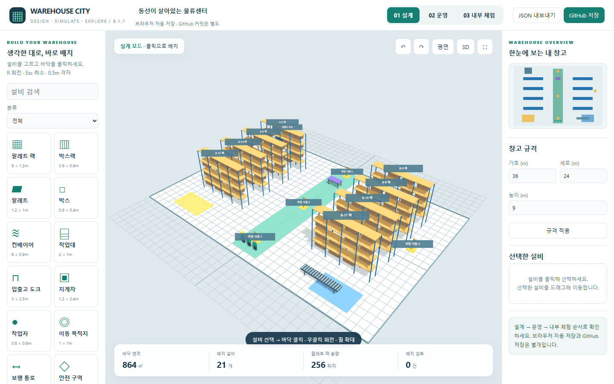
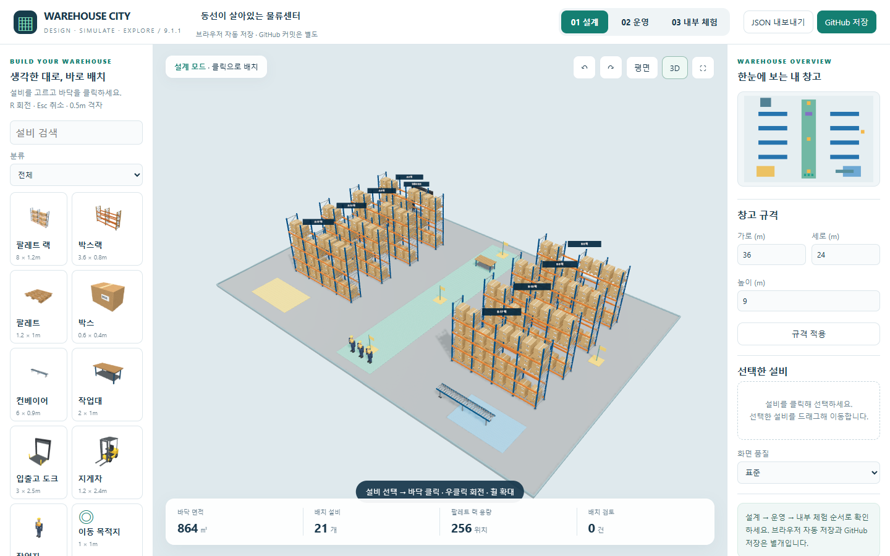
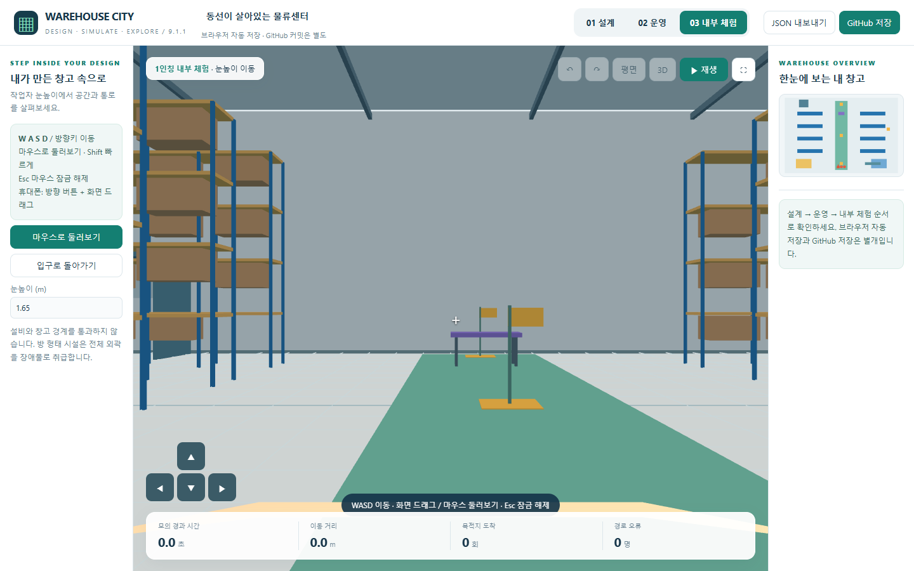
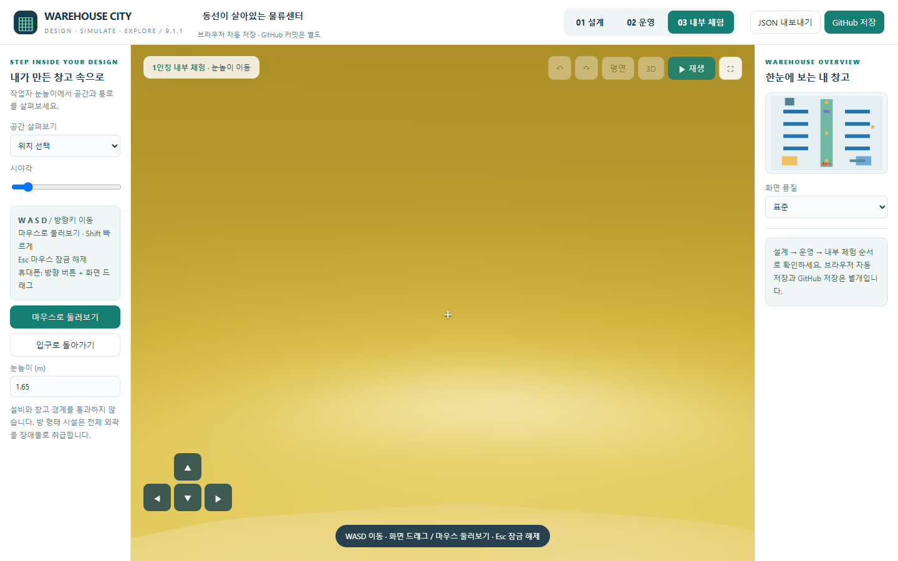
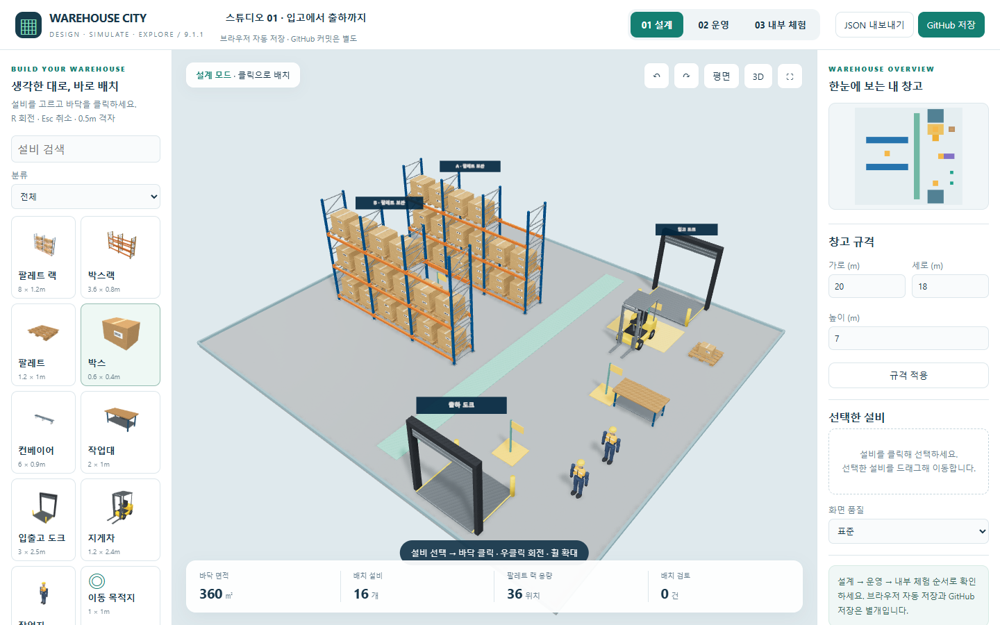
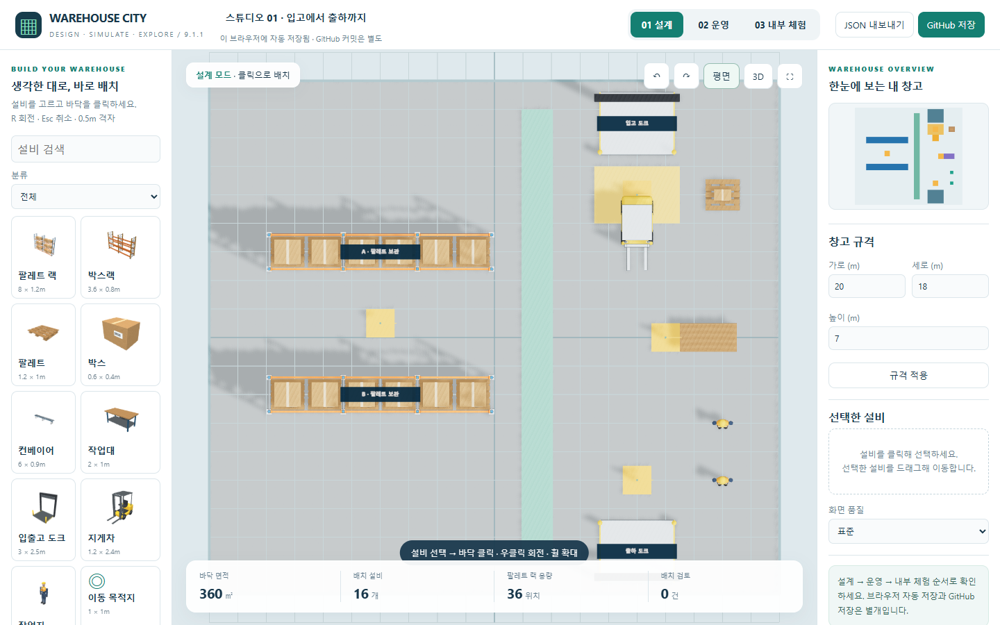
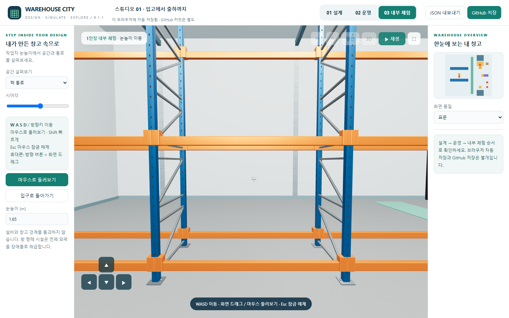
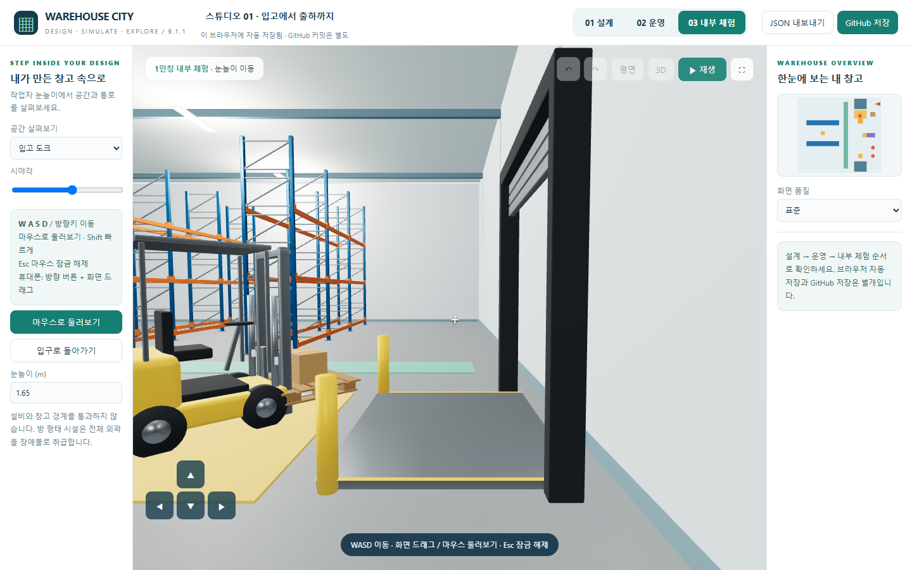
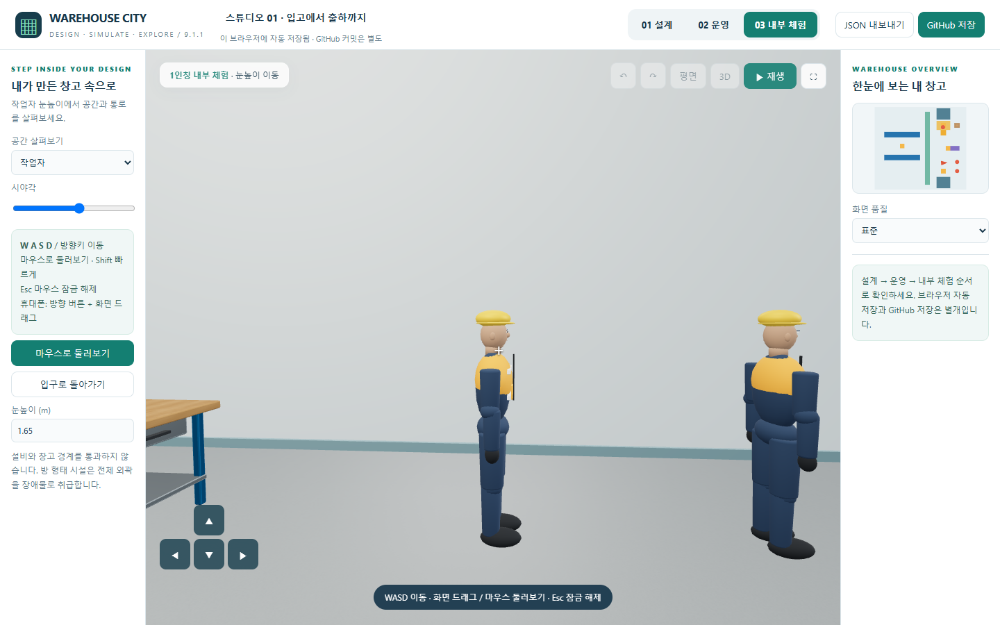
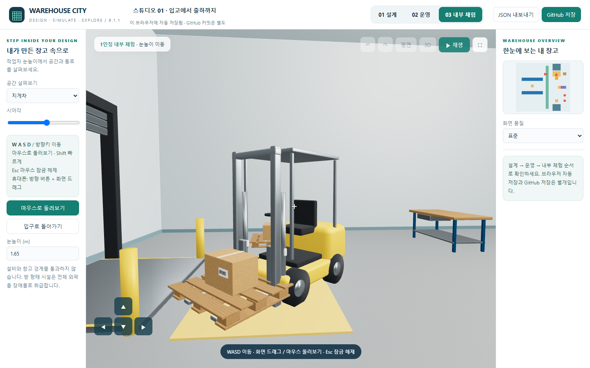
고정 간격 작업 모델의 실제 브라우저 녹화. 물류 상태는 내부 체험에서도 이어집니다. 실측 처리량 예측이 아닙니다.
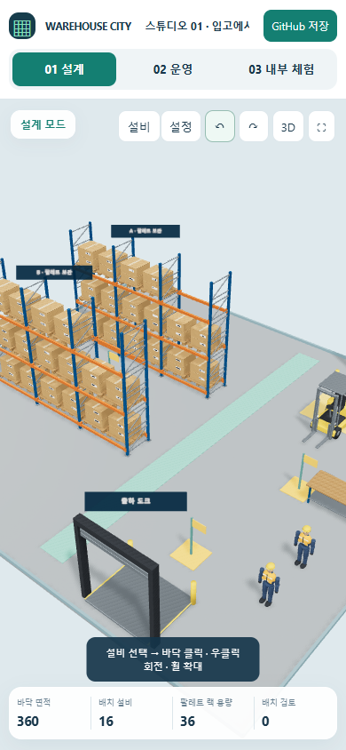
데스크톱 브라우저의 터치 에뮬레이션 검사이며 실제 모바일 하드웨어 FPS는 미측정입니다.